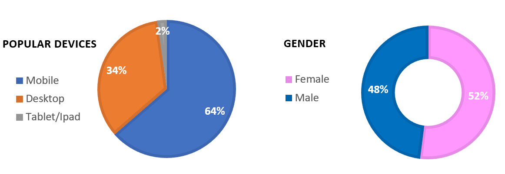
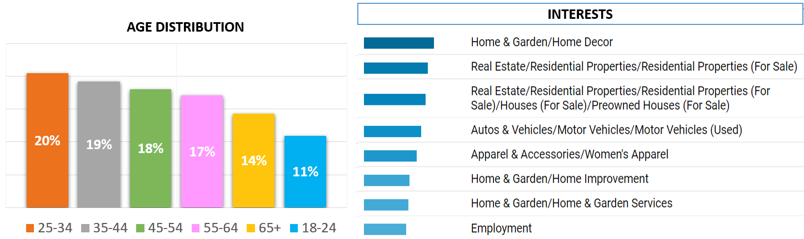
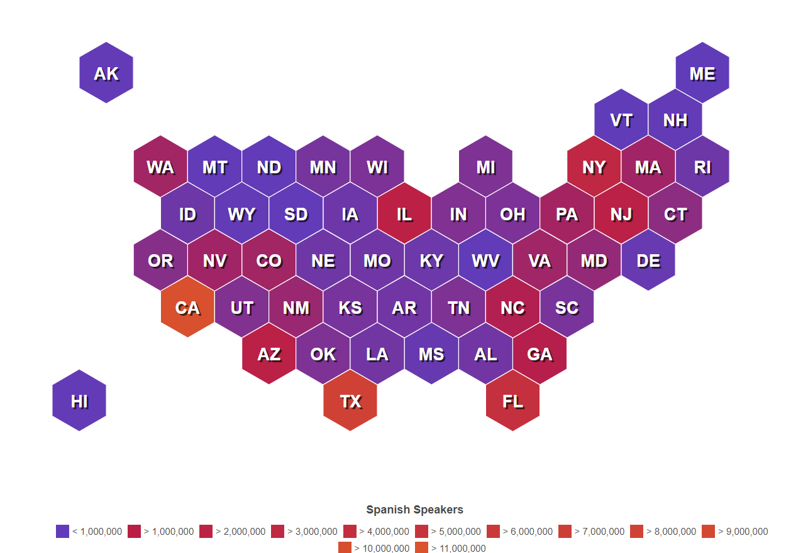
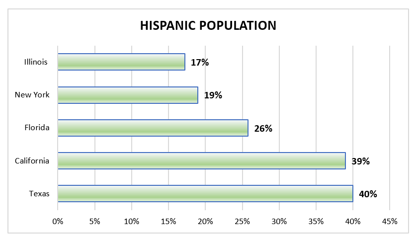
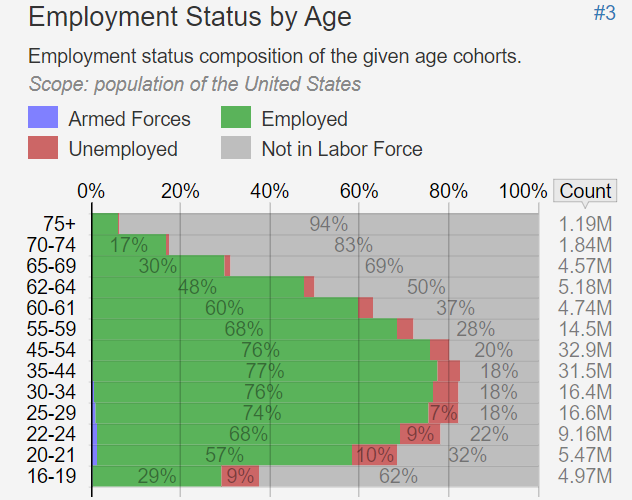
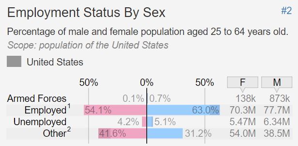
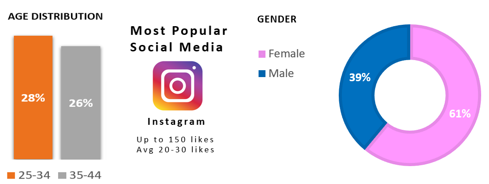

Overall Trends
Overall Engagement



Aditional Information
Education Level
In 2021, the highest level of education of the population age 25 and
older in the United States was distributed as follows:
| Total, 25 years and over | Percentage |
|---|---|
| Less than a high school diploma | 8.9 % |
| High school graduates, no college | 27.9 % |
| Some college or associate degree | 14.9 % |
| Completed an Associate’s degree | 10.5% |
| Completed a Bachelor’s degree | 23.5 % |
| Advanced Degree | 14.4 % |
Spanish Language
23% of the total amount of leads come from Texas (IM Report)
In Texas 40.2% of the population are Hispanic or Latino
85% of the 23.7 million people in Texas speak a language other than English. A large majority of those speak Spanish.


Employment Status


Recommendations
Age
Create content that is focused on audiences between 25 to 44 years old. This age range provides more than 40% of the people who interact with Fox Pest Control.
Mobile device
Prioritize content for mobile devices. 64% of our audience interacts with our websites through mobile devices.
Gender
Although more than 60% of our overall audience are females it is recommended to create content for both genders because in most of the branches the percent of females and males are relatively comparable.
Interest
The top 2 interests of the population who search for pest control are Home & Garden/Home Decor and Real Estate/Residential Properties. The most popular reason is because most people want to either protect or sell their homes. It is recommended to advertise Fox Pest Control in real estate and home improvement retail websites.
Content in Spanish
Create Content in Spanish. 23% of the leads received in 2022 come from Texas. 40% of the population are Hispanic or Latino. According to the U.S. Census in 2021, around 15% of the population in Texas did not speak English well and more than a third of the population feel more comfortable speaking a language other than English. Additionally, NY and IL are listed on the top 5 states where Spanish is spoken. 45% of the leads we obtained in 2022 are from these three states.
Sources: Google Analytics, Google Ads, U.S. BUREAU OF LABOR STATISTICS , United States Census Bureau , DATA USA
Contact: leonardo.urbiola@fox-pest.com or steven.grover@fox-pest.com
Social Media Engagement
